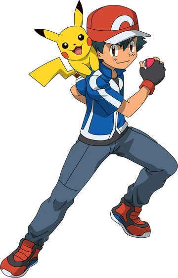

Ash Ketchum (Japanese: Satoshi) was the main character of the Pokémon anime from the original series to Pokémon Journeys: The Series. He is also the main character of various manga based on the anime, including The Electric Tale of Pikachu, Ash & Pikachu, and Pocket Monsters Diamond & Pearl. He is a Pokémon Trainer from Pallet Town whose goal is to become a Pokémon Master. His starter Pokémon was a Pikachu that he received from Professor Oak after arriving late at his laboratory. On his journeys around the Pokémon world, he's been accompanied by a multitude of close friends. In Pokémon the Series: Sun & Moon, he becomes the first Champion of the Alola region's Pokémon League. In Pokémon Journeys: The Series, he becomes the new Monarch and World Champion of the Pokémon World Coronation Series. He shares his Japanese name with the creator of the Pokémon franchise, Satoshi Tajiri. His English surname is a pun on the English motto, "Gotta catch 'em all!"
Ash grew up in Pallet Town in the Kanto region with his mother, Delia, as his father spent most of his time traveling. Eventually, Ash would meet Professor Oak and his grandson Gary Oak. In Seeing the Forest for the Trees!, Ash remembered getting lost in a forest while looking for Pokémon. He brought some wild Pokémon out of the rain and found them some shelter in a tree trunk. Ash's happiness about that moment made him think about how much he wanted to become a Pokémon Trainer.